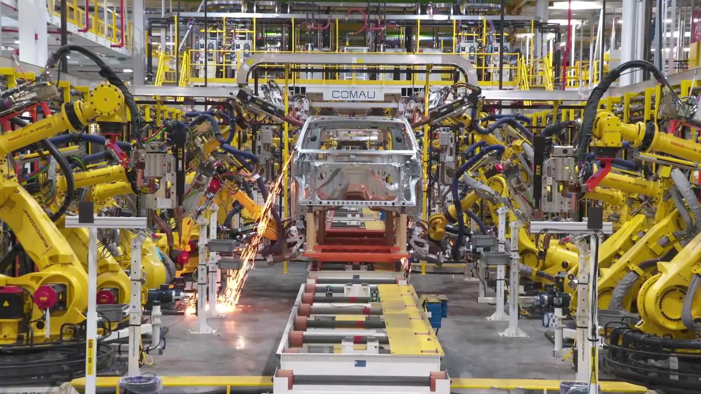
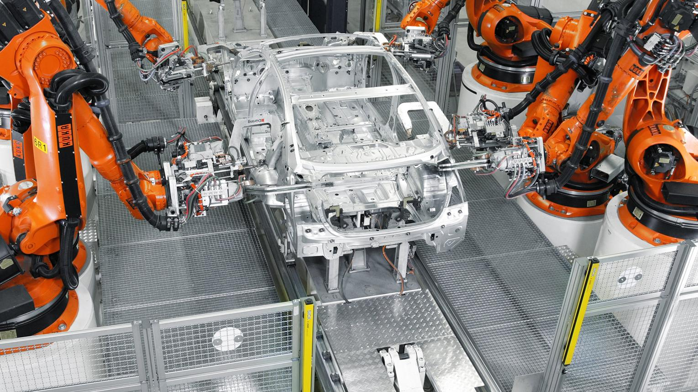
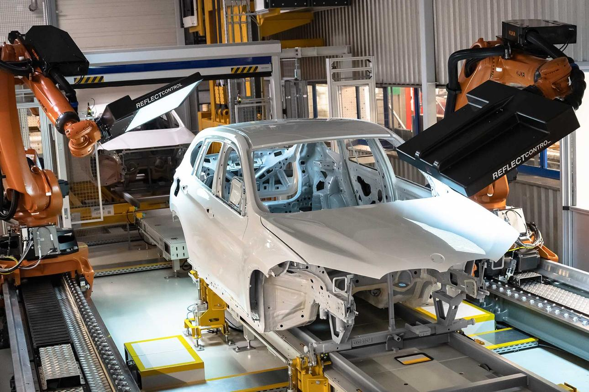

1. Definition
Takt time is the maximum time available per unit of customer demand that a production system can use to meet the required demand during the available production time.
It establishes the pace at which a production line must produce good parts to meet customer requirements.
Takt time connects two things:
- Customer demand: How many units must be produced.
- Available production time: How much time is available to produce those units.
In industrial automation, takt time helps determine whether a machine, workstation, or production line has sufficient capacity to meet the required production rate.
For example, if an automotive assembly line must produce 240 vehicles during 480 minutes of available production time, the required production pace is one vehicle every two minutes.
2. Takt Time Formula
Where:
- Net available production time is the time allocated for production after excluding defined non-production periods, such as scheduled breaks.
- Customer demand is the number of units required during that same period.
The time period used in the numerator and the demand period in the denominator must match.
Example 1: Automotive production
Assume an automotive plant has the following production requirements:
| Parameter | Value |
|---|---|
| Shift duration | 480 minutes |
| Scheduled breaks | 30 minutes |
| Other planned non-production periods | 10 minutes |
| Customer demand | 220 vehicles per shift |
Net available production time:
Takt time:
Therefore, the production system must deliver an average of one good vehicle every 2 minutes to meet demand.
This does not mean every machine must complete its operation in exactly 2 minutes. Individual stations may have shorter or longer cycles depending on line design, parallel equipment, buffers, and work distribution.
3. Why Takt Time Is Required
Without a demand-based production pace, a factory may produce too slowly and miss customer requirements, or produce too quickly and accumulate unnecessary inventory.
Takt time provides a common reference for:
- Production planning.
- Machine and workstation capacity assessment.
- Production-line balancing.
- Manpower allocation.
- Identifying operations that cannot meet the required pace.
- Evaluating the production impact of breakdowns and downtime.
- Determining whether additional equipment or parallel stations are required.
The central question is:
Can the production system consistently deliver the required quantity of good products within the available production time?
4. Takt Time vs Cycle Time vs Throughput vs Lead Time
These terms are related but describe different aspects of production.
| Parameter | Meaning | Example |
|---|---|---|
| Takt time | Required production pace based on demand | One vehicle every 120 seconds |
| Cycle time | Time taken to complete a defined operation or production cycle | A robot completes its welding cycle in 95 seconds |
| Throughput | Actual output rate of the production system | 27 vehicles per hour |
| Lead time | Total elapsed time from a defined starting point to a defined endpoint | 4 hours from release into production to completion |
| Bottleneck | Operation that constrains the overall production rate | A station that can process only 25 vehicles per hour |
Takt time versus cycle time
This is the most important distinction.
Takt time is demand-derived. Cycle time is process-derived.
Takt time answers:
How frequently must we deliver a unit to meet demand?
Cycle time answers:
How long does this operation or defined production cycle actually take?
Suppose the takt time is 120 seconds per vehicle.
- Station A cycle time: 80 seconds.
- Station B cycle time: 105 seconds.
- Station C cycle time: 135 seconds.
Station C takes longer than the required pace. If it is a serial station that processes one vehicle at a time, has no parallel capacity, and is not offset by an applicable production arrangement, it cannot independently sustain the required rate.
Stations A and B have cycle times below takt time, but that alone does not guarantee that the complete line will meet demand. Downtime, quality losses, blocking, starvation, and other constraints still matter.
5. Understanding the Relationship Between Takt Time and Cycle Time
For a simple serial production system with one unit processed at a time at each station, the design objective is generally to keep each station's effective cycle time at or below takt time.
| Cycle time compared with takt time | Interpretation |
|---|---|
| Cycle time less than takt time | The operation has nominal time capacity to meet the required pace |
| Cycle time equal to takt time | The operation uses the full available pace allowance, leaving little or no time margin |
| Cycle time greater than takt time | The operation may be unable to meet demand without parallel capacity, process redesign, or another valid production arrangement |
Cycle time below takt time is not proof of adequate real-world capacity. The calculation may exclude losses, and a machine that normally completes a cycle in 100 seconds may still fail to deliver a part every 120 seconds if its availability or quality performance is poor.
Example 2: One station exceeds takt time
Assume:
- Takt time: 60 seconds per part.
- Station cycle time: 75 seconds per part.
- One station processes one part at a time.
The station's theoretical production rate is:
The required rate is:
The station cannot achieve the required rate under these assumptions.
Possible responses include:
- Reducing the cycle time through a safe, validated process improvement.
- Distributing work across multiple stations.
- Introducing parallel processing capacity.
- Removing unnecessary handling or waiting.
- Redesigning the process, tooling, or machine sequence.
The correct response depends on the operation's constraints, quality requirements, safety requirements, and cost.
6. Takt Time and Production-Line Balancing
Production-line balancing means distributing work across stations so that the line can meet demand without creating avoidable waiting, overload, or excessive work-in-process inventory.
Consider a line with a takt time of 60 seconds and three serial stations.
| Station | Cycle time | Difference from takt |
|---|---|---|
| A | 35 seconds | 25 seconds below |
| B | 55 seconds | 5 seconds below |
| C | 70 seconds | 10 seconds above |
Station C is a likely capacity constraint in this simplified example. Station A has considerably more nominal time capacity than Station C.
Potential improvement: examine whether some work from Station C can be transferred to Station A without compromising the process, tooling, quality, safety, or sequence requirements.
However, moving work is not automatically the right answer. Stations may have different equipment, process dependencies, fixture requirements, or technical limitations.
Important: The station with the longest cycle time is not always the bottleneck under every operating condition. Actual constraints must be verified using production data.
7. Takt Time in an Automated Automotive Production Line
Consider a robotic body-in-white welding line.

Station 1: Loading and locating
The body panel or assembly is loaded, positioned, and clamped in a fixture. Its cycle time includes the relevant loading and locating activities within the defined cycle boundaries.

Station 2: Robotic welding
Robots execute the programmed weld sequence. Robot movement, weld execution, interlocks, fixture operations, and coordination can contribute to the station's cycle time.

Station 3: Unclamping and transfer
The fixture releases the assembly and the conveyor transfers it to the next operation, subject to the line's interlocks and transfer logic.
Suppose the line's takt time is 90 seconds per assembly.
The engineering team must establish whether the line can deliver a good assembly at the required pace. That assessment includes more than the robot's programmed execution time.
Relevant factors include:
- Robot motion and welding time.
- Fixture clamping and unclamping.
- Conveyor transfer time.
- PLC sequencing and interlocks.
- Communication delays where relevant.
- Robot or PLC fault recovery.
- Fixture sensor failures.
- Quality rejects and rework.
- Blocking and starvation between stations.
A robot may complete its own sequence in 65 seconds, yet the station may take 95 seconds to deliver the next assembly because the complete sequence includes additional operations or waiting.
Therefore, measure the complete, consistently defined production cycle rather than relying only on one component's execution time.
8. Net Available Production Time
The available production time used in the takt calculation must be defined consistently.
Suppose a shift lasts 8 hours:
If scheduled breaks total 30 minutes and another 10 minutes are explicitly designated as planned non-production time:
For demand of 220 units:
Whether a particular planned activity should be excluded depends on the plant's production-planning convention. The key is to avoid excluding the same time twice or mixing incompatible definitions.
Unplanned breakdowns are generally not subtracted from the original planned available time simply to make the takt calculation look achievable. Instead, they are recorded as production losses when evaluating actual performance. Some capacity-planning models use additional adjustments, but those assumptions should be stated explicitly.
9. Takt Time Is Not the Same as Target Cycle Time
Takt time defines the pace required by demand. Target cycle time is an engineering or operational target for a process.
A plant may set a target cycle time below takt time to provide a margin for normal variation, transfer activities, or other constraints.
For example:
- Takt time: 90 seconds per unit.
- Target station cycle time: 75 seconds per unit.
- Actual station cycle time: 82 seconds per unit.
The station is slower than its target, but its measured cycle time remains below takt time. That does not automatically establish that the whole line meets demand, because other stations and losses must also be considered.
The 15-second margin between the target and takt time is a design choice, not a universal rule. Appropriate margins depend on the system's operating characteristics.
10. Takt Time and Machine Capacity
For a simple machine that produces one unit per completed cycle, theoretical production rate is:
where cycle time is expressed in seconds and the resulting rate is units per hour.
If the takt time is 72 seconds per unit, the demand-based rate is:
A machine with a 60-second cycle has a theoretical rate of:
Its theoretical rate exceeds the required rate. However, this does not prove that its actual good-output rate will reach 50 units per hour. Downtime, rejects, changeovers, and other losses can reduce output.
Machines that produce multiple parts per cycle or operate in parallel require a capacity calculation that accounts for the number of parts produced and the actual operating arrangement.
11. Practical Use in Maintenance and Troubleshooting
Takt time becomes particularly useful when maintenance decisions affect production output.
Case A: A breakdown causes missed demand
A station has a 70-second cycle against a takt time of 80 seconds. Its nominal capacity appears adequate, but recurring sensor faults stop production for several minutes each hour.
The station's effective output may fall below the required rate.
Maintenance should examine:
- Fault frequency and duration.
- Sensor and actuator reliability.
- PLC fault and interlock history.
- Pneumatic or hydraulic instability.
- Robot alarms and recovery sequences.
- Repeat failures and root causes.
The objective is not merely to restore operation. It is to improve reliable production performance.
Case B: Improving a non-bottleneck machine
Suppose a line's effective constraint is a station that requires 100 seconds per unit. Another station takes 70 seconds.
Reducing the second station's cycle time from 70 to 55 seconds may not increase total line output if the 100-second constraint remains unchanged and there is no other limiting factor.
This is why maintenance and automation improvements should be evaluated against the actual line constraint, not only the local machine's performance.
Case C: A machine cannot safely meet the required pace
If the process cannot meet takt time without bypassing safety interlocks, reducing necessary weld time, or compromising quality, the answer is not to force the machine to run faster.
The correct response is an engineering review of the process, tooling, sequence, capacity, and design assumptions. Safety and product quality are requirements, not optional features to be traded for a prettier production number.
12. Common Mistakes
- Confusing takt time with cycle time. Takt comes from available time and demand; cycle time comes from the process.
- Using the entire shift duration without accounting for excluded periods. This can produce an incorrect takt calculation.
- Mixing time units. For example, dividing seconds by demand expressed per shift without converting the units consistently.
- Assuming every machine must have the same cycle time. The line's design and station arrangement determine how individual cycles relate to the required pace.
- Assuming cycle time below takt guarantees demand is met. Availability, quality, blocking, starvation, and other losses can reduce actual output.
- Treating takt time as a machine speed command. It is a production-planning reference, not a universal instruction to accelerate a machine.
- Ignoring changes in demand. A demand increase reduces takt time if available production time stays constant.
- Improving a non-bottleneck while ignoring the actual constraint. Local improvement may not increase overall line output.
13. Interview Questions and Answers
Q1. What is takt time?
Takt time is the available production time divided by customer demand over the same period. It represents the required production pace to meet demand.
Q2. What is the formula for takt time?
Q3. What is the difference between takt time and cycle time?
Takt time is determined by customer demand and available production time. Cycle time is the elapsed time for a defined production operation or cycle.
Q4. What happens if cycle time exceeds takt time?
A single serial station processing one unit at a time may not be able to meet the required production rate. The solution may involve cycle-time reduction, work redistribution, parallel capacity, or process redesign.
Q5. Does cycle time below takt time guarantee that production demand will be met?
No. Downtime, quality losses, blocking, starvation, changeovers, and other factors may reduce effective output.
Q6. Can two stations have different cycle times while operating on the same line?
Yes. Their work content and equipment differ. The line must be designed so that its effective capacity and flow meet the required production pace.
Q7. How does takt time help maintenance?
It provides a demand-based reference for evaluating whether machine capacity and reliability are adequate. It also helps prioritize breakdown reduction when a constrained operation is limiting production.
Q8. Does takt time change when customer demand changes?
Yes, if available production time remains constant. Higher demand reduces takt time, while lower demand increases it.
Q9. Is takt time the same as throughput?
No. Takt time is a required time interval per unit. Throughput is the quantity actually produced per unit of time.
Q10. Should a robot always be programmed to finish its cycle exactly at takt time?
No. Robot cycle time is only one part of the production system. The sequence must meet process, safety, quality, and line-capacity requirements. A suitable design margin may also be necessary.
14. Final Mental Model
Remember the relationship:
Customer demand
|
v
Net available production time
|
v
Takt time
(Required production pace)
|
v
Compare with station and line cycle times
|
v
Assess capacity, bottlenecks and production losses
|
v
Meet demand with safe, reliable production
The distinction to retain is simple:
- Takt time: How frequently production must deliver a unit.
- Cycle time: How long a defined operation actually takes.
- Throughput: How much the system actually produces.
- Bottleneck: What constrains the system's output.
Takt time converts customer demand into a measurable production requirement. Cycle time, capacity, reliability, and quality determine whether the production system can meet it.
Next topic in sequence: 15_Throughput | Throughput.